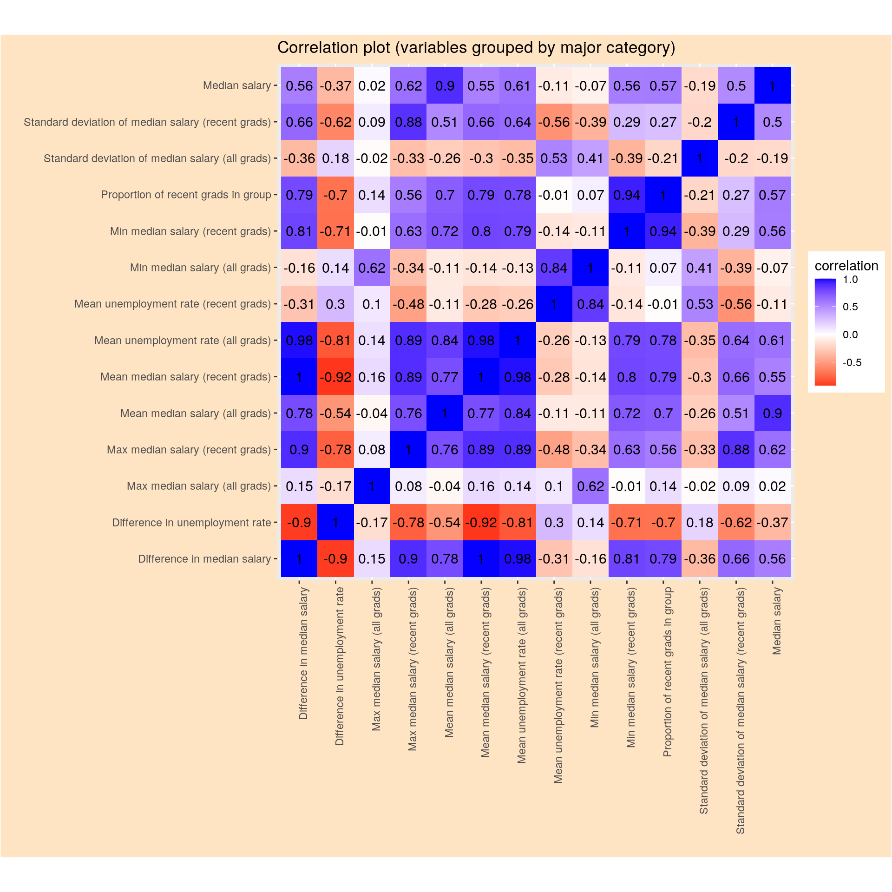
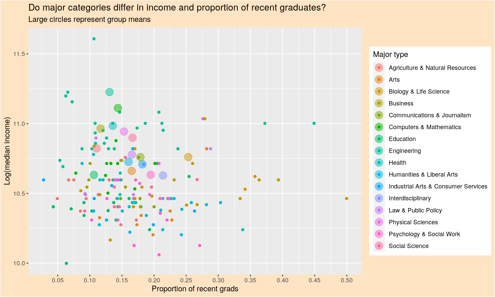
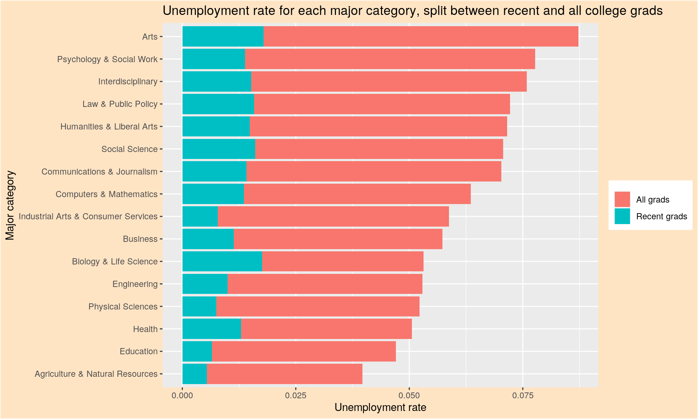
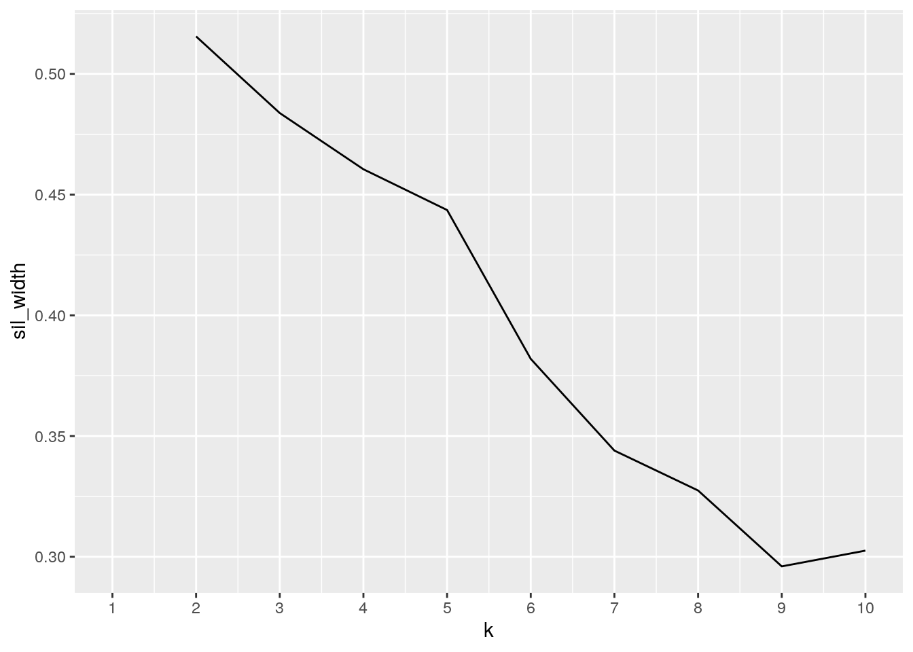
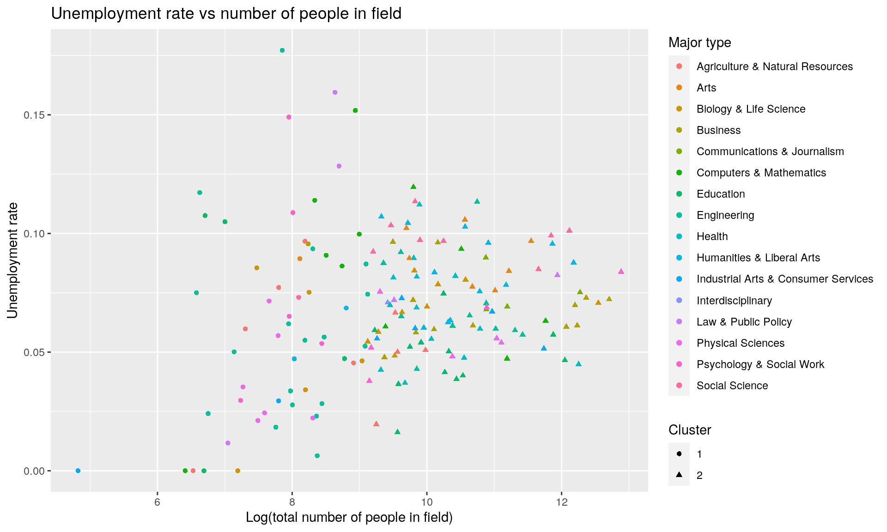

This project contains two datasets from FiveThirtyEight with data on major, salary, employment, and other pertinent information about the job market. One dataset contains information on all college graduates, while the other contains information only on recent graduates. I am interested in seeing whether and to what extent the job market differs for recent graduates vs the overall workforce, controlling for major choice. Furthermore, I’m interested in looking into which majors and major categories are more/less popular among recent graduates than among the overall workforce.
library(fivethirtyeight)
library(tidyverse)
college_all_ages %>% glimpse## Rows: 173
## Columns: 11
## $ major_code <int> 1100, 1101, 1102, 1103, 1104, 1105, 1106,…
## $ major <chr> "General Agriculture", "Agriculture Produ…
## $ major_category <chr> "Agriculture & Natural Resources", "Agric…
## $ total <int> 128148, 95326, 33955, 103549, 24280, 7940…
## $ employed <int> 90245, 76865, 26321, 81177, 17281, 63043,…
## $ employed_fulltime_yearround <int> 74078, 64240, 22810, 64937, 12722, 51077,…
## $ unemployed <int> 2423, 2266, 821, 3619, 894, 2070, 264, 26…
## $ unemployment_rate <dbl> 0.02614711, 0.02863606, 0.03024832, 0.042…
## $ p25th <dbl> 34000, 36000, 40000, 30000, 38500, 35000,…
## $ median <dbl> 50000, 54000, 63000, 46000, 62000, 50000,…
## $ p75th <dbl> 80000, 80000, 98000, 72000, 90000, 75000,…college_recent_grads %>% glimpse## Rows: 173
## Columns: 21
## $ rank <int> 1, 2, 3, 4, 5, 6, 7, 8, 9, 10, 11, 12, 13…
## $ major_code <int> 2419, 2416, 2415, 2417, 2405, 2418, 6202,…
## $ major <chr> "Petroleum Engineering", "Mining And Mine…
## $ major_category <chr> "Engineering", "Engineering", "Engineerin…
## $ total <int> 2339, 756, 856, 1258, 32260, 2573, 3777, …
## $ sample_size <int> 36, 7, 3, 16, 289, 17, 51, 10, 1029, 631,…
## $ men <int> 2057, 679, 725, 1123, 21239, 2200, 2110, …
## $ women <int> 282, 77, 131, 135, 11021, 373, 1667, 960,…
## $ sharewomen <dbl> 0.1205643, 0.1018519, 0.1530374, 0.107313…
## $ employed <int> 1976, 640, 648, 758, 25694, 1857, 2912, 1…
## $ employed_fulltime <int> 1849, 556, 558, 1069, 23170, 2038, 2924, …
## $ employed_parttime <int> 270, 170, 133, 150, 5180, 264, 296, 553, …
## $ employed_fulltime_yearround <int> 1207, 388, 340, 692, 16697, 1449, 2482, 8…
## $ unemployed <int> 37, 85, 16, 40, 1672, 400, 308, 33, 4650,…
## $ unemployment_rate <dbl> 0.018380527, 0.117241379, 0.024096386, 0.…
## $ p25th <dbl> 95000, 55000, 50000, 43000, 50000, 50000,…
## $ median <dbl> 110000, 75000, 73000, 70000, 65000, 65000…
## $ p75th <dbl> 125000, 90000, 105000, 80000, 75000, 1020…
## $ college_jobs <int> 1534, 350, 456, 529, 18314, 1142, 1768, 9…
## $ non_college_jobs <int> 364, 257, 176, 102, 4440, 657, 314, 500, …
## $ low_wage_jobs <int> 193, 50, 0, 0, 972, 244, 259, 220, 3253, …We will join both datasets by major. Both of these datasets contain exactly the same majors, so we will use a full join. There are no majors exclusive to any one of these datasets, so no information will be lost. The columns common to both datasets will be suffixes by either "_all" or "_recent", depending on which dataset it comes from. There are a few variable (e.g. sharewomen) that are present only in the recent graduates dataset.
college_join <- full_join(college_all_ages, college_recent_grads,
by = c(major_code = "major_code"), suffix = c("_all", "_recent"))
college_join %>% glimpse## Rows: 173
## Columns: 31
## $ major_code <int> 1100, 1101, 1102, 1103, 1104, 1105…
## $ major_all <chr> "General Agriculture", "Agricultur…
## $ major_category_all <chr> "Agriculture & Natural Resources",…
## $ total_all <int> 128148, 95326, 33955, 103549, 2428…
## $ employed_all <int> 90245, 76865, 26321, 81177, 17281,…
## $ employed_fulltime_yearround_all <int> 74078, 64240, 22810, 64937, 12722,…
## $ unemployed_all <int> 2423, 2266, 821, 3619, 894, 2070, …
## $ unemployment_rate_all <dbl> 0.02614711, 0.02863606, 0.03024832…
## $ p25th_all <dbl> 34000, 36000, 40000, 30000, 38500,…
## $ median_all <dbl> 50000, 54000, 63000, 46000, 62000,…
## $ p75th_all <dbl> 80000, 80000, 98000, 72000, 90000,…
## $ rank <int> 65, 64, 72, 153, 22, 144, 113, 162…
## $ major_recent <chr> "General Agriculture", "Agricultur…
## $ major_category_recent <chr> "Agriculture & Natural Resources",…
## $ total_recent <int> 10399, 14240, 2439, 21573, NA, 741…
## $ sample_size <int> 158, 273, 44, 255, 36, 110, 4, 24,…
## $ men <int> 6053, 9658, 1749, 5347, NA, 4897, …
## $ women <int> 4346, 4582, 690, 16226, NA, 2519, …
## $ sharewomen <dbl> 0.4179248, 0.3217697, 0.2829028, 0…
## $ employed_recent <int> 8884, 12323, 2174, 17112, 3149, 65…
## $ employed_fulltime <int> 7589, 11119, 1819, 14479, 2558, 57…
## $ employed_parttime <int> 2031, 2196, 620, 5353, 1121, 1246,…
## $ employed_fulltime_yearround_recent <int> 5888, 9093, 1528, 10824, 1735, 452…
## $ unemployed_recent <int> 178, 649, 182, 917, 338, 314, 0, 8…
## $ unemployment_rate_recent <dbl> 0.01964246, 0.05003084, 0.07724958…
## $ p25th_recent <dbl> 30000, 25000, 27000, 22000, 32000,…
## $ median_recent <dbl> 40000, 40000, 40000, 30000, 53000,…
## $ p75th_recent <dbl> 50000, 50000, 54000, 40000, 70000,…
## $ college_jobs <int> 2418, 1925, 535, 5443, 1183, 2089,…
## $ non_college_jobs <int> 4717, 6221, 893, 9571, 1274, 3545,…
## $ low_wage_jobs <int> 839, 1362, 94, 2125, 485, 1231, 0,…Let’s select only those variables that appear in both datasets and remove rows with NA in the total population variable. Then we can examine some overall summary statistics.
college_join <- college_join %>% select(contains("_all") | contains("_recent")) %>%
filter(!is.na(total_all) & !is.na(total_recent)) %>% mutate(prop_recent = total_recent/(total_recent +
total_all))
college_join %>% summarize(mean(unemployment_rate_all), mean(unemployment_rate_recent),
mean(median_all), mean(median_recent))## # A tibble: 1 x 4
## `mean(unemployment_… `mean(unemployment_r… `mean(median_all… `mean(median_rec…
## <dbl> <dbl> <dbl> <dbl>
## 1 0.0574 0.0680 56786. 40077.As we expect, the median income is lower among recent graduates than among all graduates by about $1.6710^{4}. The unemployment rate is also higher among recent graduates by about 0.011 percentage points.
Let’s examine some summary statistics again, but this time group it by the major category (e.g. Engineering, Business, etc.). We create several summary statistics for each major category and type (i.e. recent graduate), including the mean unemployment, mean median salary (i.e. for a particular major category, what is the average of each major’s median salary), minimum median salary, maximum median salary, standard deviation of median salary and proportion of the group that contains recent graduates. We can create new variables from this data examining the difference in unemployment and median salary between recent and all graduates, and also the average overall median salary for a group.
major_category_data <- college_join %>% select(contains("_all") |
contains("_recent")) %>% na.omit() %>% group_by(major_category_all) %>%
summarize(groupmean_unemployment_all = weighted.mean(unemployment_rate_all,
total_all), groupmean_unemployment_recent = weighted.mean(unemployment_rate_recent,
total_recent), groupmean_salary50_all = weighted.mean(median_all,
total_all), groupmean_salary50_recent = weighted.mean(median_recent,
total_recent), groupmin_salary50_all = min(median_all),
groupmin_salary50_recent = min(median_recent), groupmax_salary50_all = max(median_all),
groupmax_salary50_recent = max(median_recent), groupsd_salary50_all = sd(median_all,
na.rm = T), groupsd_salary50_recent = sd(median_recent,
na.rm = T), groupprop_recent = sum(total_recent)/(sum(total_recent) +
sum(total_all))) %>% mutate(groupdiff_unemployment = groupmean_unemployment_recent -
groupmean_unemployment_all, groupdiff_salary50 = groupmean_salary50_recent -
groupmean_salary50_all, group_salary50 = groupprop_recent *
groupmean_salary50_recent + (1 - groupprop_recent) * groupmean_salary50_all) %>%
arrange(-groupdiff_salary50)
major_category_data## # A tibble: 16 x 15
## major_category_… groupmean_unemp… groupmean_unemp… groupmean_salar…
## <chr> <dbl> <dbl> <dbl>
## 1 Interdisciplina… 0.0773 0.0709 43000
## 2 Education 0.0423 0.0496 42519.
## 3 Psychology & So… 0.0687 0.0806 43985.
## 4 Arts 0.0732 0.0891 44820.
## 5 Industrial Arts… 0.0514 0.0574 47313.
## 6 Law & Public Po… 0.0567 0.0852 50378.
## 7 Communications … 0.0663 0.0751 49766.
## 8 Humanities & Li… 0.0669 0.0861 48070.
## 9 Biology & Life … 0.0572 0.0702 51420.
## 10 Agriculture & N… 0.0365 0.0515 52028.
## 11 Social Science 0.0659 0.0969 57105.
## 12 Business 0.0546 0.0684 60037.
## 13 Physical Scienc… 0.0514 0.0536 59791.
## 14 Health 0.0332 0.0569 61820.
## 15 Engineering 0.0526 0.0664 77930.
## 16 Computers & Mat… 0.0536 0.0711 70205.
## # … with 11 more variables: groupmean_salary50_recent <dbl>,
## # groupmin_salary50_all <dbl>, groupmin_salary50_recent <dbl>,
## # groupmax_salary50_all <dbl>, groupmax_salary50_recent <dbl>,
## # groupsd_salary50_all <dbl>, groupsd_salary50_recent <dbl>,
## # groupprop_recent <dbl>, groupdiff_unemployment <dbl>,
## # groupdiff_salary50 <dbl>, group_salary50 <dbl>Arranging by difference in salary between recent and all graduates, we can see that in every field, recent graduates tend to make less. In fields like Interdisciplinary, Education, and Psychology & Social Work, this difference is diminished. In fields like Engineering and Computers & Mathematics, this difference is more extreme. Furthermore, in every field except for Interdisciplinary, the unemployment rate is higher among recent graduates.
col_names = c("Difference in median salary", "Difference in unemployment rate",
"Max median salary (all grads)", "Max median salary (recent grads)",
"Mean median salary (all grads)", "Mean median salary (recent grads)",
"Mean unemployment rate (all grads)", "Mean unemployment rate (recent grads)",
"Min median salary (all grads)", "Min median salary (recent grads)",
"Proportion of recent grads in group", "Standard deviation of median salary (all grads)",
"Standard deviation of median salary (recent grads)", "Median salary")
major_category_data %>% na.omit() %>% select(-1) %>% cor() %>%
as.data.frame() %>% rownames_to_column("var1") %>% pivot_longer(cols = -1,
names_to = "var2", values_to = "correlation") %>% ggplot(aes(x = var1,
y = var2, fill = correlation)) + geom_tile() + scale_fill_gradient2(low = "red",
mid = "white", high = "blue") + geom_text(aes(label = round(correlation,
2)), color = "black", size = 4) + theme(axis.text.x = element_text(angle = 90,
hjust = 1)) + coord_fixed() + scale_x_discrete(labels = col_names) +
scale_y_discrete(labels = col_names) + labs(title = "Correlation plot (variables grouped by major category)",
x = "", y = "") + theme(plot.background = element_rect("bisque"))
In this matrix, we can observe the correlation between each pair of numeric variables in the dataset, grouped by major category. Apart from the perfect correlations on the diagonal, the highest correlation between two distinct variables is 0.98, corresponding to mean unemployment rate and difference in median salary between recent and all college graduates. Max median salary among all graduates does not appear to strongly correlate with any other variable in the dataset. Meanwhile, difference in unemployment rate correlates negatively with most other variables, implying that major categories with higher median salaries tend to have lower unemployment as well.
ggplot(college_join, aes(x = prop_recent, y = log(median_recent),
color = major_category_all)) + geom_point() + geom_point(data = major_category_data,
aes(x = groupprop_recent, y = log(group_salary50), color = major_category_all),
size = 5, alpha = 0.5) + labs(title = "Do major categories differ in income and proportion of recent graduates?",
color = "Major type", subtitle = "Large circles represent group means") +
xlab("Proportion of recent grads") + ylab("Log(median income)") +
scale_x_continuous(breaks = seq(0, 0.55, 0.05)) + theme(plot.background = element_rect("bisque"))
theme(panel.background = "burlywood")## List of 1
## $ panel.background: chr "burlywood"
## - attr(*, "class")= chr [1:2] "theme" "gg"
## - attr(*, "complete")= logi FALSE
## - attr(*, "validate")= logi TRUEIn this chart, we can examine the relationship between the proportion of recent graduates in a field and their respective income. These points are colored by major type, as depicted in the legend on the right. Furthermore, group mean values are also shown on this graph in the larger, more transparent points. This plot shows us that Engineering, along with Computers & Mathematics, tend to be the highest paying disciplines. The disciplines with the highest relative proportion of recent graduates are Biology & Life Science and Interdisciplinary. There does not seem to be any correlation between the proportion of recent graduates in a field and how much the field pays.
college_join %>% select(major_category_all, unemployment_rate_all,
unemployment_rate_recent, prop_recent) %>% mutate(unemployment_share_recent = prop_recent *
unemployment_rate_recent, unemployment_share_all = (1 - prop_recent) *
unemployment_rate_all) %>% select(1, 5:6) %>% rename(c(major_category = "major_category_all",
`Recent grads` = "unemployment_share_recent", `All grads` = "unemployment_share_all")) %>%
pivot_longer(2:3, names_to = "recent_or_all", values_to = "unemployment_share") %>%
ggplot(aes(x = reorder(major_category, unemployment_share),
y = unemployment_share, fill = recent_or_all)) + geom_bar(position = "stack",
stat = "summary", fun = "mean") + coord_flip() + ylab("Unemployment rate") +
xlab("Major category") + ggtitle("Unemployment rate for each major category, split between recent and all college grads") +
theme(legend.title = element_blank(), plot.background = element_rect("bisque")) This chart shows us the total unemployment in each field, divided between recent and all graduates. We can see that overall, Interdisciplinary, Arts, and Social Science have the highest rates of unemployment, while Health, Agriculture, and Education have the lowest rates. Furthermore, Biology and Life Sciences appears to have the highest share of its unemployment from recent graduates. This is explained by the high proportion of recent graduates in this field, as shown in the previous scatterplot.
In this section, we will use the recent college graduates dataset rather than using the joined dataset. The recent graduates dataset contains features that were not examined in the previous section, such as the proportion of women in a major. We will look just at total number of people in the major, the share of women in the major, the median income, and the unemployment rate.
library(cluster)
clust_data <- college_recent_grads %>% select(major, major_category,
total, sharewomen, median, unemployment_rate) %>% mutate(total_log = log(total),
median_log = log(median)) %>% na.omit
# Pull out information about major and major categories, to
# be used later
majors <- clust_data %>% select(major, major_category)
clust_data <- clust_data %>% select(4, 6:8)
clust_data %>% glimpse## Rows: 172
## Columns: 4
## $ sharewomen <dbl> 0.12056434, 0.10185185, 0.15303738, 0.10731320, 0.3…
## $ unemployment_rate <dbl> 0.018380527, 0.117241379, 0.024096386, 0.050125313,…
## $ total_log <dbl> 7.757479, 6.628041, 6.752270, 7.137278, 10.381583, …
## $ median_log <dbl> 11.60824, 11.22524, 11.19821, 11.15625, 11.08214, 1…# Plot mean silhouette width for different numbers of
# clusters
sil_width <- vector()
for (i in 2:10) {
pam_fit <- pam(clust_data, k = i)
sil_width[i] <- pam_fit$silinfo$avg.width
}
ggplot() + geom_line(aes(x = 1:10, y = sil_width)) + scale_x_continuous(name = "k",
breaks = 1:10) From the chart of silhouette widths versus number of clusters, we can determine that the best silhouette width occurs with 2 clusters, corresponding to a value of 0.52. This indicates that a reasonable structure has been found.
pam_data <- pam(clust_data, k = 2)
clust_data_plot <- clust_data %>% mutate(cluster = pam_data$clustering,
major = majors$major, major_category = majors$major_category)
clust_data_plot %>% ggplot() + geom_point(aes(x = total_log,
y = unemployment_rate, color = major_category, shape = as.factor(cluster))) +
labs(title = "Unemployment rate vs number of people in field",
color = "Major type", shape = "Cluster", x = "Log(total number of people in field)",
y = "Unemployment rate") Though the clusters aren’t completely separable, there does appear to be a structure. Majors in cluster 2 tend to have more people in their respective fields than those in cluster 1. Furthermore, no overall trend is visible between number of people in a field versus unemployment rate in said field. However, the variance in unemployment rate does decrease as the number of people in the field increases, likely due to sampling variation effects due to sample size.
# Majors in cluster 1
clust_data_plot %>% filter(cluster == 1) %>% group_by(major_category) %>%
summarize(num = n()) %>% arrange(-num)## # A tibble: 13 x 2
## major_category num
## <chr> <int>
## 1 Engineering 18
## 2 Computers & Mathematics 6
## 3 Physical Sciences 6
## 4 Agriculture & Natural Resources 5
## 5 Biology & Life Science 5
## 6 Psychology & Social Work 5
## 7 Education 4
## 8 Law & Public Policy 3
## 9 Humanities & Liberal Arts 2
## 10 Industrial Arts & Consumer Services 2
## 11 Arts 1
## 12 Business 1
## 13 Social Science 1# Majors in cluster 2
clust_data_plot %>% filter(cluster == 2) %>% group_by(major_category) %>%
summarize(num = n()) %>% arrange(-num)## # A tibble: 16 x 2
## major_category num
## <chr> <int>
## 1 Humanities & Liberal Arts 13
## 2 Business 12
## 3 Education 12
## 4 Health 12
## 5 Engineering 11
## 6 Biology & Life Science 9
## 7 Social Science 8
## 8 Arts 7
## 9 Computers & Mathematics 5
## 10 Industrial Arts & Consumer Services 5
## 11 Agriculture & Natural Resources 4
## 12 Communications & Journalism 4
## 13 Physical Sciences 4
## 14 Psychology & Social Work 4
## 15 Law & Public Policy 2
## 16 Interdisciplinary 1# Summary statistics for each cluster
clust_data_plot %>% group_by(as.factor(cluster)) %>% summarize(mean(sharewomen),
mean(total_log), mean(median_log), mean(unemployment_rate))## # A tibble: 2 x 5
## `as.factor(clus… `mean(sharewome… `mean(total_log… `mean(median_lo…
## <fct> <dbl> <dbl> <dbl>
## 1 1 0.418 7.90 10.7
## 2 2 0.577 10.4 10.5
## # … with 1 more variable: `mean(unemployment_rate)` <dbl>Cluster 1 appears to consist more of STEM majors, such as Engineering, Computers & Mathematics, and Physical Sciences. Cluster 2, on the other hand, appears to consist more of liberal arts majors, such as Humanities, Business, and Education.
Fields in cluster 2 tend to have a higher mean number of people, as was seen in the graph above. Majors in cluster 2 also tends to have more women, a slightly lower pay, and a slightly higher unemployment rate than majors in cluster 1.